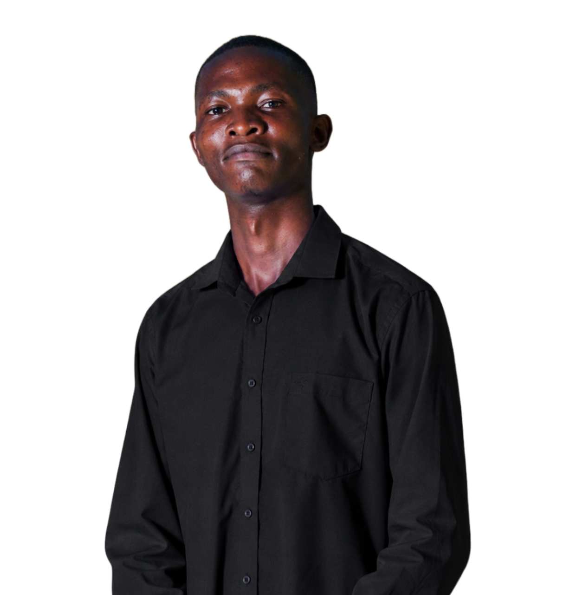
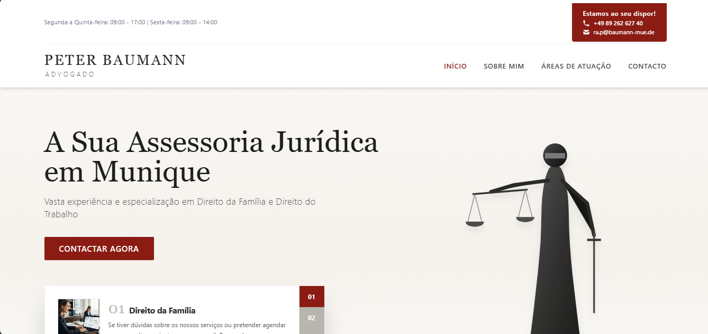
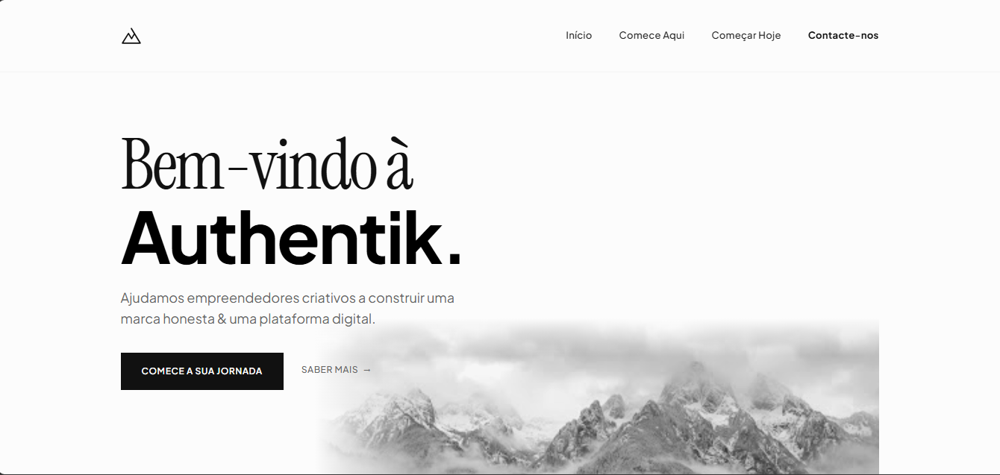
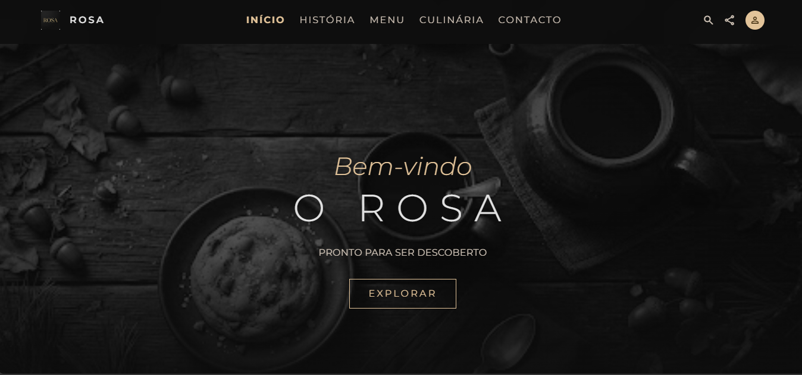

01 — DIREÇÃO
Pensar antes de desenhar.
Compreender o negócio, organizar a informação e definir uma direção visual que faça sentido para quem vai usar.
Desenvolvimento web & criação digital
Sou José Lelo. Transformo ideias em experiências digitais claras, funcionais e com identidade própria.
Explorar projetos ↘
02 / Método de trabalho
Cada projeto começa por compreender o problema. A tecnologia e o design entram para construir uma resposta útil.
01 — DIREÇÃO
Compreender o negócio, organizar a informação e definir uma direção visual que faça sentido para quem vai usar.
02 — CONSTRUÇÃO
Desenvolver interfaces responsivas e funcionalidades que tornam a experiência simples, rápida e intuitiva.
03 — ENTREGA
Publicar o projeto, verificar o funcionamento e acompanhar os ajustes necessários à sua evolução.
03 / O que faço
Desenvolvimento web com atenção ao detalhe, à experiência de utilização e ao propósito de cada projeto.
José LeloProgramador & estrategista
Um pouco sobre mim
Sou o José Lelo, desenvolvedor de sites apaixonado por criar experiências digitais intuitivas, visualmente apelativas e centradas no utilizador.
Com formação em design e uma compreensão da psicologia do utilizador, procuro construir experiências que não se ficam pela aparência: precisam de resolver problemas reais.
Falar sobre um projeto ↗05 / Selecção de trabalho
Três exemplos de experiências digitais desenvolvidas para diferentes contextos e necessidades.
01 / Institucional
Website para um escritório de advocacia, com foco em credibilidade e apresentação profissional.

02 / Tecnologia
Landing page para uma marca de tecnologia, construída para comunicar valor e orientar a conversão.

03 / Hospitalidade
Website para uma cafeteria, com menu interactivo e informação orientada à visita e reserva.

06 / Próximo passo
Se procuras alguém para transformar uma ideia num projecto digital, conta-me o que tens em mente.